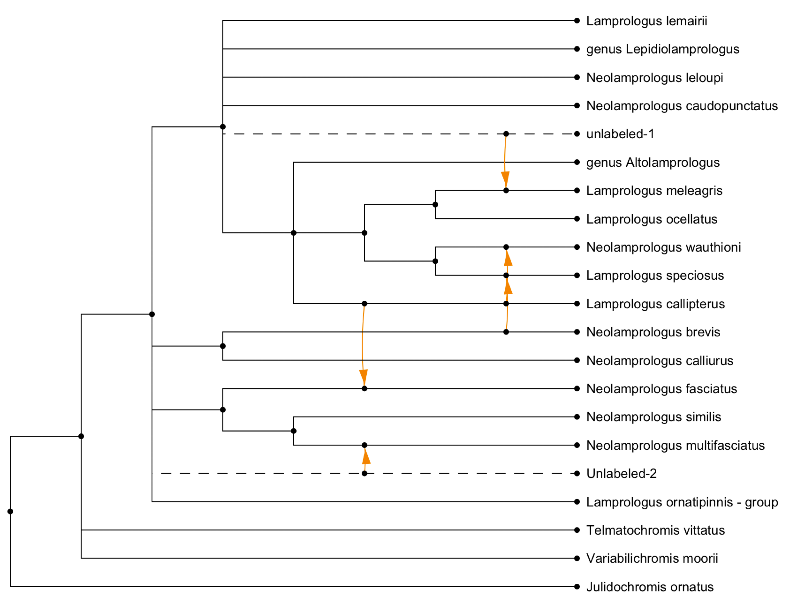
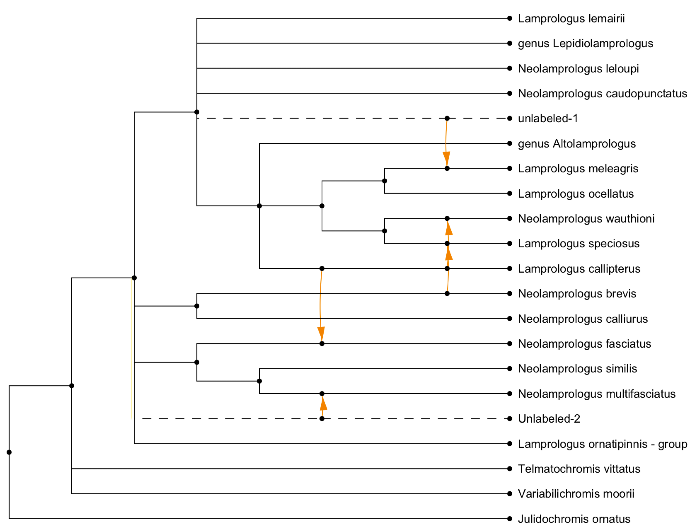

PhyloSketch App User Manual
Daniel H. Huson
University of Tuebingen
Version 2.2.0, Nov 11, 2025
Contents
1 Introduction
PhyloSketch App (also known as PhyloSketch2) is an application for interactively
creating and
editing phylogenetic trees and networks by drawing them. Written in Java using JavaFX, this
program runs on macOS, Linux, and Windows and is also designed for touch-screen devices
running iOS or Android.
PhyloSketch App is a new program based on PhyloSketch (also known as PhyloSketch1),
which was introduced in [Francis et al., 2021]. The program reuses some code from our
SplitsTree app [Huson and Bryant, 2024], but most of the code and algorithms are new
[Huson, 2025].
2 Installation
- Desktop versions for macOS, Linux, and Windows are available from:
- The iOS app is available for testing via Apple TestFlight. If you are interested in beta
testing,
contact the author for an invitation.
- Open the app and grant any necessary permissions for accessing storage, if
prompted.
3 Getting Started
When you first open PhyloSketch, you are presented with a canvas containing a simple
example
tree. You can modify this example or start creating your own phylogenetic tree or network. The
toolbar at the top provides access to all major functions, including mode selection, import options,
layout, and various editing tools.
4 Modes Overview
PhyloSketch operates in four primary modes. The mode can be selected using the first
control on the toolbar. In the desktop version, tooltips and menu items may refer to these
as Sketch, Move, View, and Capture modes, corresponding to the modes described
below.
4.1 Edit Mode (Sketch)

- Create new nodes and edges by drawing directly on the canvas.
- Long-press to create a new node, and press-drag to create edges.
- Shift-press-drag to move nodes or reshape edges.
- Use this mode to build a new tree or network from scratch or to modify an existing
one.
4.2 Transform Mode (Move)

- Move nodes, reshape edges, and adjust the layout of your phylogenetic tree or
network.
- Touch or click and drag nodes or edges to reposition or reshape them.
4.3 Read-Only Mode (View)

- Editing is disabled, but you can still select nodes or edges to inspect labels and
properties.
- Useful for viewing and presenting a tree or network without risk of accidental
modifications.
4.4 Capture Mode

- Use this mode when capturing a phylogeny from a background image.
- Capture nodes, edges, and labels present in the image, assisted by image-analysis
and OCR.
Usually, after initial capture, Edit Mode is used to interactively complete and refine
the
captured tree or network.
5 Tool Bar Overview
The toolbar provides access to the core functionalities of PhyloSketch:
5.1 Mode Selection
Select the desired mode (Edit/Sketch, Transform/Move, Read-Only/View, or Capture) using
the
first item on the toolbar.
5.2 Selection Menu Button
Select nodes or edges based on their properties:
- All Select all nodes and edges.
- None Deselect everything.
- Extend Extend the current selection based on adjacency.
- Invert Invert the current selection.
- Roots/Leaves Select root or leaf nodes.
- Articulation Nodes Select nodes that separate biconnected components.
5.3 Run Capture Menu Button
When a background image has been loaded, these items support capturing a tree or
network
from that image.
Pressing the Run Capture menu button once attempts to locate the root in the background
image. Pressing it again performs the capture using the current parameters. Alternatively, use the
following menu items explicitly:
Load Image…
Import an image to use as a background for the network.
Place Root
Locate the root in the background image as preparation for network capture.
Capture Phylogeny
Extract phylogenetic structure from the image, converting it into a graph representation.
Remove Image
Remove the currently loaded background image from the view.
5.3.1 Advanced Capture Items
Capture Labels
Use OCR to capture the labels in the background image.
Capture Lines
Detect and capture lines from the image, typically used for network reconstruction.
Parameters…
Open a dialog to configure various settings for network capture (line detection, OCR,
thresholds, etc.).
Here is an example of a captured network [Koblmueller et al., 2007]:
 

5.4 Formatting Button
The formatting button toggles the visibility of the formatting pane described below.
5.5 Other Toolbar Buttons
- Delete Remove selected nodes and edges.
- Undo/Redo Revert or repeat the most recent actions.
- Zoom In/Out Adjust the zoom level for the canvas.
- Zoom to Fit Zoom to fit the current phylogeny in the window.
- Export Menu Copy selections or save images and data in various formats.
6 Status Bar
The status bar reports the number of components, roots, nodes, edges, leaves, and the
hybridization number h. It also indicates properties such as whether the current object is a
network or a tree-based network.
7 Formatting Pane
The formatting pane has several panels for formatting nodes and their labels, and edges
and their
labels.
7.1 Node Style Panel
This panel provides options for customizing the appearance of nodes:
- Shape Dropdown menu to select the shape of nodes.
- Size Combo box to specify or edit the size of nodes.
- Color Color picker to select node color.
- Revert Button to revert a nodes style (shape, size, and color) to default
values.
7.2 Node Labels Panel
This panel provides options for labeling nodes:
- Nodes to Label Dropdown menu to select which nodes should be labeled.
- Labeling Method Dropdown menu to specify how the selected nodes should be
labeled.
- Unique Labels Toggle button to enforce unique labels, preventing reuse of
existing
labels.
- Label Input Field Text field to manually enter labels for nodes.
- You can use HTML-like tags for styling text (e.g., <i>, <b>, <sub>, <sup>).
7.3 Node Labels Formatting Panel
This panel provides options for formatting node labels:
- Font Dropdown menu to select the font for node labels.
- Revert Font Button to revert font settings to default.
- Size Combo box to specify or edit the font size for node labels.
- Revert Size Button to revert size settings to default.
- Bold (B) Toggle bold formatting for node labels.
- Italic (I) Toggle italic formatting for node labels.
- Underline (U) Toggle underlining for node labels.
- Color Color picker to set the text color of node labels.
- Revert Color Button to revert text color to default.
- Fill Color picker to set the background fill color of node labels.
- Revert Fill Button to revert the background fill color to default.
7.4 Edge Style Panel
This panel provides options for customizing the appearance and properties of edges:
- Shape Buttons to select the shape of edges, including straight (S),
rectangular (R),
curved (C), and smooth styles.
- Line Dropdown menu to select the line style (solid, dashed, dotted, etc.).
- Width Combo box to specify or edit the line width.
- Color Color picker to set edge color.
- Revert Color Button to reset edge color to its default.
- Show Arrows Toggle to enable or disable arrowheads on edges.
- Show Reticulate Toggle to enable or disable orange highlighting of reticulate
edges.
7.5 Edge Labels Panel
This panel provides options for managing edge labels, including weights, support
values, and
probabilities:
- Weight Text field to set the weight or branch length of an edge.
- Show Weight Toggle to display edge weights or branch lengths.
- Measure Weights Button to set edge weights based on coordinates.
- Support Text field to set confidence or support values (e.g. bootstrap).
- Show Support Toggle to display confidence or support values.
- Probability Text field to set probabilities for reticulate edges.
- Show Probability Toggle to display probabilities on reticulate edges.
7.6 Edge Label Style Panel
This panel provides options for customizing the style and appearance of edge labels:
- Font Dropdown menu to select the font for edge labels.
- Revert Font Button to reset font settings to default.
- Size Combo box to specify or edit the font size for edge labels.
- Revert Size Button to reset size settings to default.
- Bold (B) Toggle bold formatting for edge labels.
- Italic (I) Toggle italic formatting for edge labels.
- Underline (U) Toggle underlining for edge labels.
- Color Color picker to set the text color of edge labels.
- Revert Color Button to reset text color to default.
- Fill Color picker to set the background fill color of edge labels.
- Revert Fill Button to reset the background fill color to default.
7.7 Draw Phylogeny
This panel provides options for algorithmic drawing of the phylogeny.
There are three choices for layout:
- Rectangular,
- Circular,
- Radial.
There are three choices for scaling:
- To-scale phylogram,
- Early-branching cladogram,
- Late-branching cladogram.
The Run button re-runs the layout using the current settings.
7.8 Layout Phylogeny
This panel provides tools for geometric transformations of the displayed phylogenetic
tree or
network:
- Rotate Left Rotate the entire phylogeny 90∘ counterclockwise.
- Rotate Right Rotate the entire phylogeny 90∘ clockwise.
- Horiz. Flip Reflect the phylogeny across a vertical axis.
- Vert. Flip Reflect the phylogeny across a horizontal axis.
- Resize Mode Toggle an interactive mode that allows resizing the layout by
direct
manipulation.
- Layout Labels Reposition node and edge labels to improve readability after
transformations.
7.9 Modify Phylogeny
This panel provides options for modifying the tree or network:
- Magic Wand Apply the most pertinent modification, based on the current
selection
of nodes and edges.
- Induce Keep only the part of the phylogeny induced by the current selection.
- Declare Root Assign a specific node as the root of the phylogenetic
network,
redirecting edges where necessary.
- Merge Nodes Combine multiple selected nodes into a single node while
preserving
connectivity.
- Del. Thru Nodes Delete nodes of indegree one and outdegree one.
- Reverse Edges Invert the direction of selected edges while maintaining
network
integrity.
- Cross Edges For any selected node of degree four, replace the node with two
crossing edges.
- Acceptor Edge Declare an edge as the recipient of a horizontal gene transfer
event.
There can be at most one such edge per reticulation node.
8 Working with Nodes and Edges
8.1 Creating Nodes and Edges
- In Edit Mode, drag along the canvas to create edges.
- In Edit Mode, shift-drag on selected nodes or edges to move them.
- Double-click (or long-press, on touch devices) to create new nodes.
8.2 Transforming Nodes and Edges
- In Transform Mode, drag nodes to move them.
- Drag on edges to adjust their shape and control points.
9 Menus (Non-Mobile App Only)
9.1 File Menu
The File menu contains the usual file-related items:
- New… Create a new document.
- Open… Open an existing document (file suffix .psketch). Additionally, you can
import a tree or network from a file in Newick format (file suffix .new, .tre or similar)
or from a file created by PhyloSketch1 (file suffix .nexus).
- Recent Access a list of recently opened files.
- Export Open the export submenu for saving data in different formats.
- Image… Export the current canvas as an image file.
- Newick… Export the current tree or network in Newick format.
- Save… Save the current document.
- Page Setup… Configure page layout and settings for printing.
- Print… Print the current document.
- Close Close the currently open document or window.
- Quit Exit the application.
9.2 Edit Menu
The Edit menu items are:
- Undo Revert the last action.
- Redo Repeat the last undone action.
- Cut Remove the selected items and copy them to the clipboard.
- Copy Copy the selected items to the clipboard.
- Copy Image Copy an image of the current canvas to the clipboard.
- Paste Insert the contents of the clipboard into the current document.
- Delete Remove the selected nodes and/or edges.
- Clear Delete all nodes and edges from the canvas.
- Apply Modification Apply the most pertinent modification (among the items
listed
below), given the current selection of nodes and edges.
- Remove Thru Nodes Replace “thru nodes” (nodes with indegree 1 and
outdegree
1) by direct edges.
- Declare Root Change the root of the tree or network by selecting a new node
or
edge.
- Declare Acceptor Edge For any reticulate node, exactly one of the incoming
edges
may be declared the transfer acceptor edge. If the selected edge is already declared
an acceptor edge, it loses this property.
- Mode Switch between editing modes:
- Edit Mode Enable adding and modifying nodes and edges.
- Move Mode Allow repositioning of nodes and reshaping of edges.
- Find… Search for a node or edge by label.
- Find Again Repeat the previous search to locate the next matching node.
- Add LSA Edges Add edges representing Lowest Stable Ancestor (LSA)
relationships
between selected nodes.
9.3 Layout Menu
The Layout menu provides items for customizing the layout and appearance of
phylogenetic trees
and networks. The following items are available:
- Outlines Toggle display of the tree or network as an outline.
- Rotate Left Rotate the tree or network 90 degrees to the left.
- Rotate Right Rotate the tree or network 90 degrees to the right.
- Flip Horizontal Flip the tree or network horizontally.
- Flip Vertical Flip the tree or network vertically.
- Resize Mode Enable or disable resize mode, allowing the layout to be resized
and
repositioned.
- Layout Labels Reset the layout of node and edge labels for better
readability.
- Layout Phylogeny submenu:
- Apply Lay out the phylogeny using the current settings.
- Radial Layout Use a radial layout.
- Rectangular Layout Use a rectangular layout.
- Circular Layout Use a circular layout.
- To-Scale Phylogram Lay out as a phylogram.
- Early-Branching Cladogram Lay out as an early-branching cladogram.
- Late-Branching Cladogram Lay out as a late-branching cladogram.
9.4 View Menu
The View menu provides items for adjusting the appearance, scaling, and layout of the
canvas:
- Use Dark Theme Toggle between light and dark themes for the application
interface.
- Increase Font Size Increase the font size of labels and text in the canvas.
- Decrease Font Size Decrease the font size of labels and text in the canvas.
- Zoom In Zoom in on the canvas for a closer view.
- Zoom Out Zoom out of the canvas for a broader view.
- Zoom To Fit Adjust the zoom level to fit the entire phylogeny within the
window.
- Enter Full Screen Switch the application to full-screen mode for an immersive
view.
9.5 Window Menu
The Window menu items are:
- Set Window Size… Set the exact size of the window.
- One menu item for each currently open document window.
9.6 Help Menu
The Help menu contains the following items:
- Check for Updates… Check whether an update for the application is available.
- About… Show an information window about the program.
- Help Window… Show a window containing this help document.
10 Combining vs Transfer View
The reticulations in a rooted phylogenetic network can be drawn in two different ways.
- Combining view All incoming edges of a reticulation node are drawn as
special edges that come together at the reticulation, representing similar amounts
of incoming genetic material, as in the case of speciation-by-hybridization or
reassortment.
- Transfer view One incoming edge has been declared a “transfer acceptor
edge” and
all other incoming edges are drawn as special edges that represent small amounts
of incoming genetic material, as in the case of horizontal gene transfer.
By default, reticulations are drawn in a combining view. To obtain a transfer view,
select one of
the incoming edges and use the Declare Acceptor Edge menu item or button to declare it to be
the transfer acceptor edge. If providing the network in extended Newick format, use ##Hi instead
of #Hi to indicate which of the incoming edges of the i-th reticulation node is the acceptor
edge.
This example shows the (complicated) published drawing of a network (Lescroart
et al. [2023], Fig. S12E) and a (simpler) transfer view obtained using the rectangular cladogram
algorithm:
Here we show a captured hybridization network (Barley et al. [2022], Fig. 2) and a combining
view obtained using the rectangular cladogram algorithm:
11 Example files
There are several example of image files and PhyloSketch files available online here:
https://github.com/husonlab/phylosketch2/tree/main/examples
12 Advanced features
The layout algorithm for rooted phylogenetic networks uses simulated annealing for
nodes of large
outdegree.but The default parameters are: start temperature = 1000, end temperature = 0.01,
1000 iterations per temperature step, cooling rate = 0.95.
We do not expose these parameters in the UI, however, if you really want to change these,
then edit the properties file PhyloSketch2.def (its location is system specific, either  Library/Preferences/PhyloSketch2.def or
Library/Preferences/PhyloSketch2.def or  .PhyloSketch2.def) and write statements
like this: SA_DEFAULT_START_TEMPERATURE=2000, SA_DEFAULT_END_TEMPERATURE=1,
SA_DEFAULT_ITERATIONS_PER_TEMPERATURE=100 and SA_DEFAULT_COOLING_RATE=0.80 to
change the values to 2000, 1, 100 and 0.8, say, respectively.
.PhyloSketch2.def) and write statements
like this: SA_DEFAULT_START_TEMPERATURE=2000, SA_DEFAULT_END_TEMPERATURE=1,
SA_DEFAULT_ITERATIONS_PER_TEMPERATURE=100 and SA_DEFAULT_COOLING_RATE=0.80 to
change the values to 2000, 1, 100 and 0.8, say, respectively.
13 Support and Feedback
For issues, bug reports, or suggestions, please use the GitHub repository or the apps
support
page linked there.
14 Third-Party Software
This software uses the Tesseract OCR engine, which is licensed under the Apache
License,
Version 2.0.
References
Anthony J. Barley, Adrin NietoMontes
de Oca, Norma L. ManrquezMorn, and
Robert C. Thomson. The evolutionary network of whiptail lizards reveals predictable
outcomes of hybridization. Science, 377(6607):773–777, 2022.
A. Francis, D.H.
Huson, and M.A. Steel. Normalising phylogenetic networks. Molecular
Phylogenetics and Evolution, 163, 2021.
Daniel H. Huson and
David Bryant. The SplitsTree App: interactive analysis and
visualization using phylogenetic trees and networks. Nature Methods, 2024.
D.H. Huson. Sketch, capture and
layout phylogenies, 2025. Manuscript under review.
S. Koblmueller,
N. Duftner, K. M. Sefc, M. Aibara, M. Stipacek, M. Blanc, B. Egger,
and C. Sturmbauer. Reticulate phylogeny of gastropod-shell-breeding cichlids from Lake
Tanganyika–the
result of repeated introgressive hybridization. BMC Evolutionary Biology, 7:7, 2007. doi:
10.1186/1471-2148-7-7. URL https://doi.org/10.1186/1471-2148-7-7.
Jonas
Lescroart, Alejandra BonillaSánchez, Constanza Napolitano, Diana L. BuitragoTorres,
Hctor E. RamrezChaves, Paola PulidoSantacruz, William J. Murphy, Hannes Svardal,
and Eduardo Eizirik. Extensive phylogenomic discordance and the complex evolutionary
history of the neotropical cat genus leopardus. Molecular Biology and Evolution, 40(12):
msad255, December 2023.